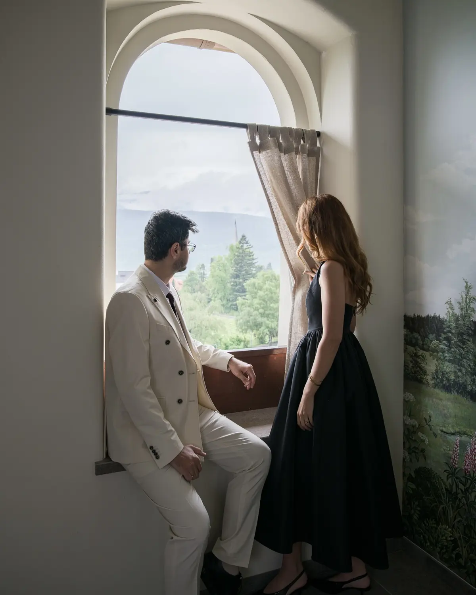
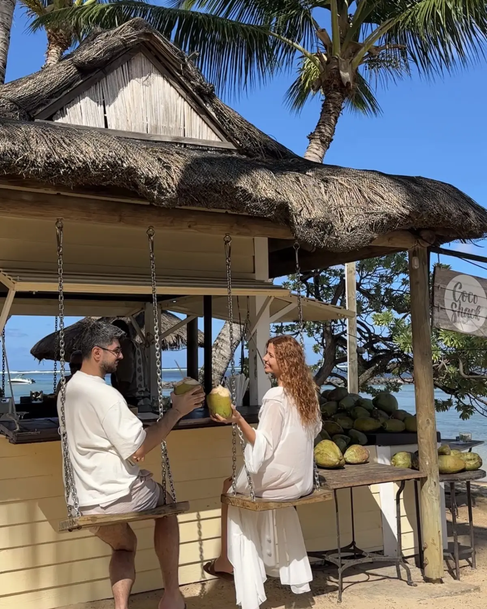
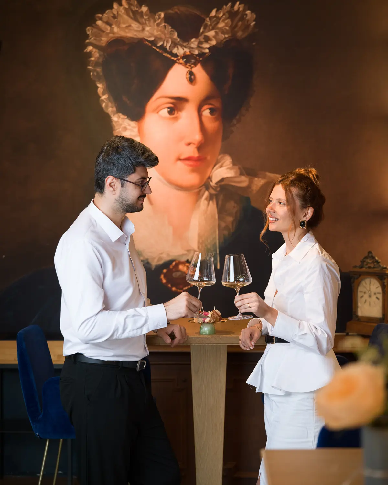
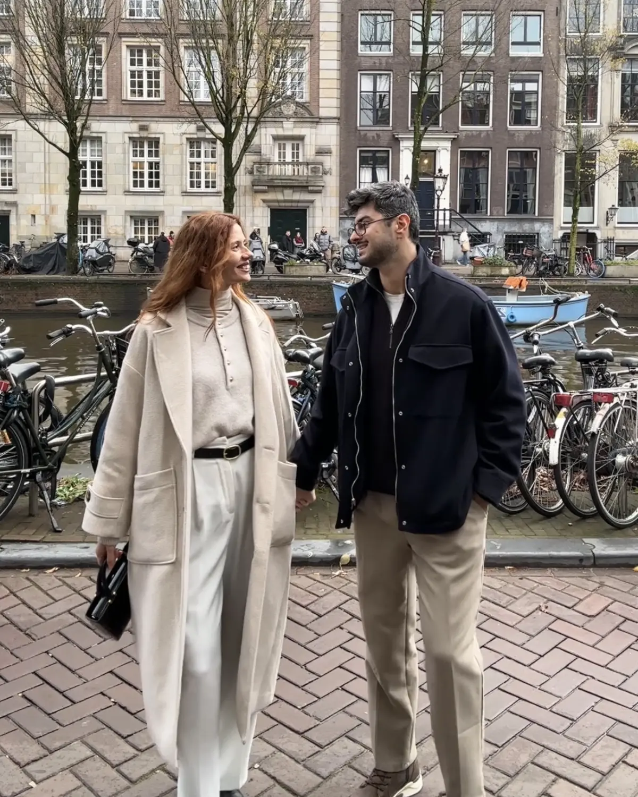
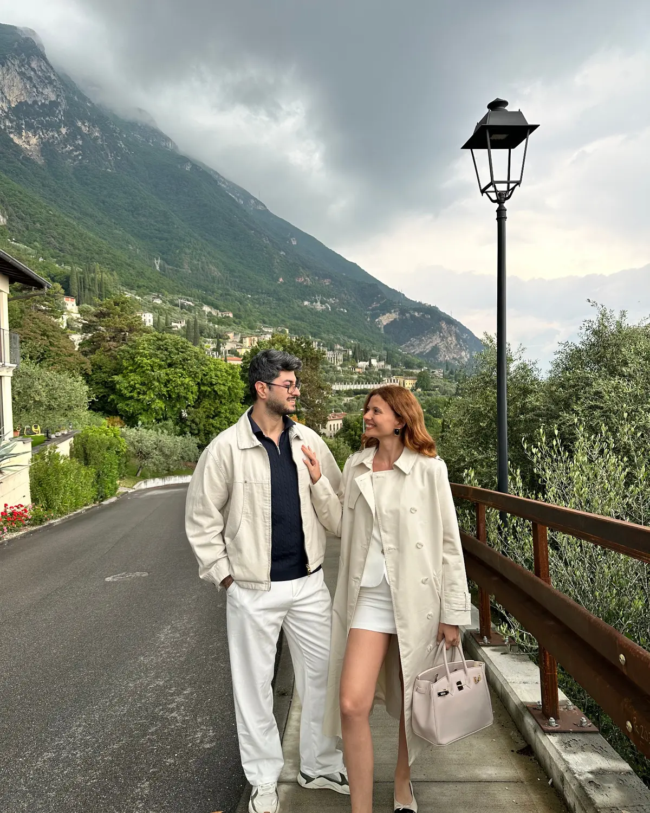
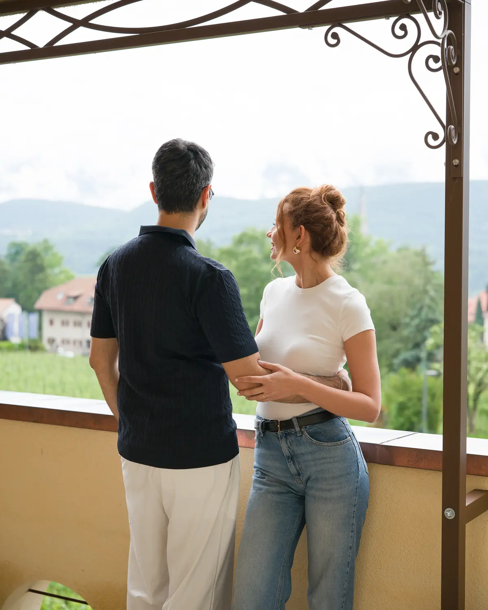

Yaratıcı yön, estetik ve deneyim anlatımı
Hikayenin duygusunu, görsel dünyasını ve izleyicinin deneyimle kuracağı bağı şekillendiriyor.
Ayça & Kerem
Seyahat deneyimlerini yalnızca belgelemiyor; insanların kendilerini o anın içinde hayal edebileceği sinematik hikayelere dönüştürüyoruz.
Hikayemizi keşfet ↓
Biz Kimiz?
Doğal çift dinamiğimiz ile yaratıcı prodüksiyon yaklaşımımızı bir araya getiriyoruz. Her projede markanın dünyasını anlamaya, o dünyayı gerçek bir deneyim üzerinden anlatmaya ve içeriği uzun süre yaşayabilecek bir marka varlığına dönüştürmeye odaklanıyoruz.
İki Perspektif
Hikayenin duygusunu, görsel dünyasını ve izleyicinin deneyimle kuracağı bağı şekillendiriyor.
Yaratıcı fikri çekim planına, akıcı bir kurguya ve markanın kullanabileceği güçlü teslimlere dönüştürüyor.
Hikayenin İçinden




Çalışma Biçimimiz
Önce sizi dinliyoruz. Markanızın hedefini, ulaşmak istediği kitleyi, anlatmak istediği duyguyu ve içeriklerin kullanılacağı kanalları netleştiriyoruz.
Bu ihtiyacı yaratıcı bir konsepte dönüştürüyor; deneyimi doğal gösteren hikaye akışını, sahneleri ve teslim kapsamını birlikte planlıyoruz.
Video, fotoğraf ve kısa format içerikleri tek bir görsel dil içinde üretiyor; her detayı markanızın karakterine ve kullanılacağı platforma göre kurguluyoruz.
İçerikleri markanızın organik paylaşımlarında ve kampanyalarında kullanabileceği şekilde teslim ediyor; uygun projelerde hikayeyi @aycandkerem üzerinden uluslararası izleyiciyle de buluşturuyoruz.

Deneyim & Vizyon
@aycandkerem; dünyayı birlikte keşfederken markalarla kurduğumuz hikayeleri uluslararası bir izleyiciyle buluşturduğumuz ana kanalımız.